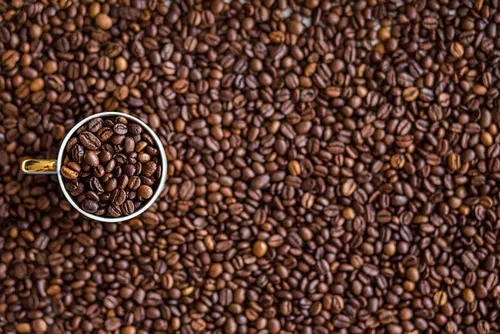

Bienvenidos a Aura Coffee
El arte del grano en cada taza. Tostamos café de especialidad de origen ético.

Nuestra Filosofía
Nos dedicamos a buscar los mejores granos de café de Colombia, Etiopía y Guatemala para llevártelos frescos a casa o servírtelos en nuestra cafetería.